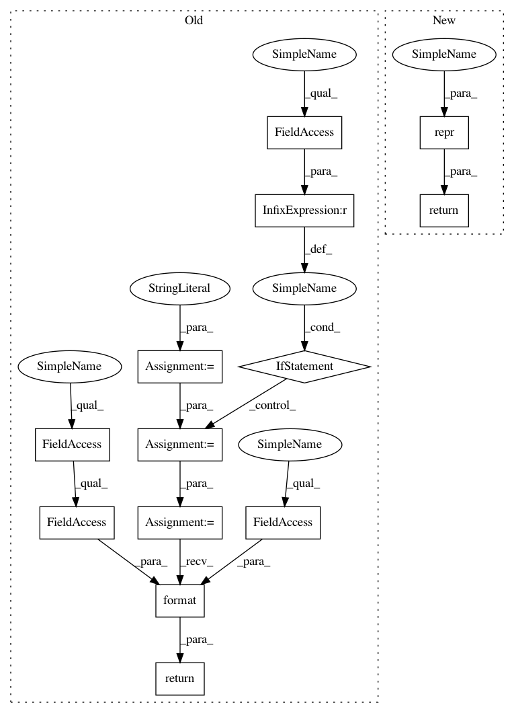

3f2a9022e0bb8893bb20ab9df32ca6e417333248,torch_geometric/nn/modules/spline_conv.py,SplineConv,__repr__,#SplineConv#,83
Before Change
self._buffers["is_open_spline"], self.K, self.degree, self.bias)
def __repr__(self):
s = ("{name}({in_features}, {out_features}, kernel_size="
"{kernel_size_repr}, is_open_spline={is_open_spline_repr}, "
"degree={degree}")
if self.bias is None:
s += ", bias=False"
s += ")"
return s.format(name=self.__class__.__name__, **self.__dict__)
After Change
self._buffers["is_open_spline"], self.K, self.degree, self.bias)
def __repr__(self):
return repr(self, ["kernel_size", "is_open_spline", "degree"])
In pattern: SUPERPATTERN
Frequency: 3
Non-data size: 13
Instances
Project Name: rusty1s/pytorch_geometric
Commit Name: 3f2a9022e0bb8893bb20ab9df32ca6e417333248
Time: 2017-11-27
Author: matthias.fey@tu-dortmund.de
File Name: torch_geometric/nn/modules/spline_conv.py
Class Name: SplineConv
Method Name: __repr__
Project Name: rusty1s/pytorch_geometric
Commit Name: 537de129aff815d5690e46858c7e5c1de0d4abd6
Time: 2017-11-27
Author: matthias.fey@tu-dortmund.de
File Name: torch_geometric/nn/modules/lin.py
Class Name: Lin
Method Name: __repr__
Project Name: rusty1s/pytorch_geometric
Commit Name: 3f2a9022e0bb8893bb20ab9df32ca6e417333248
Time: 2017-11-27
Author: matthias.fey@tu-dortmund.de
File Name: torch_geometric/nn/modules/graph_conv.py
Class Name: GraphConv
Method Name: __repr__